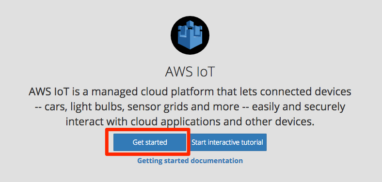
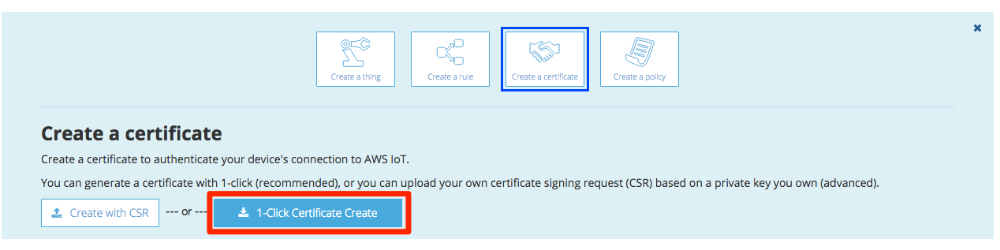
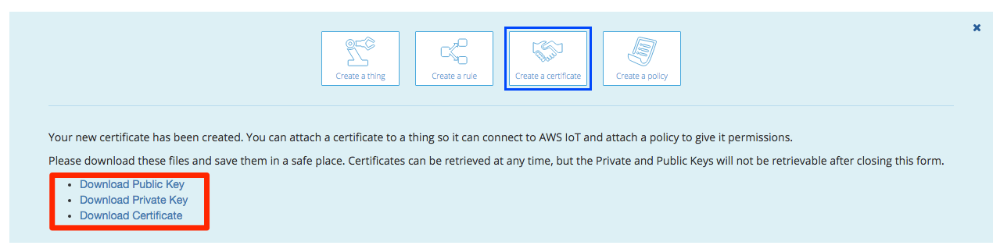
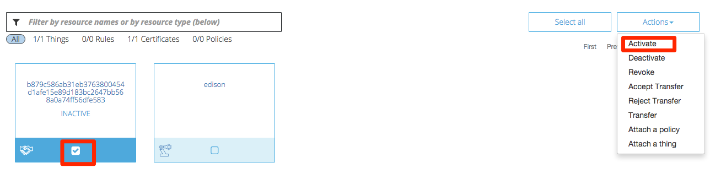
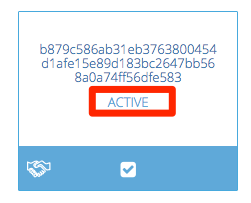
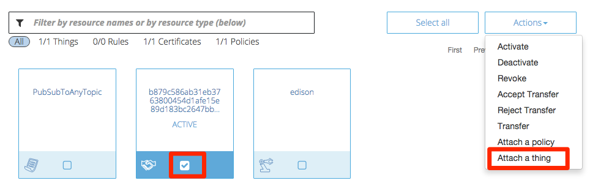

3. AWS IoT基本設定¶
3.1. デバイスの作成¶
AWSマネージメントコンソールへログインし、画面右上のメニューから東京リージョンを選択します。 サービス一覧から”AWS IoT”をクリックします。

“Get Startedが表示される場合はそちらをクリックします。
デバイス(Thing)を作成します。メニューの”Create a thing”をクリックします。Nameに”edison”と入力し、[Create]をクリックします。

リソースの一覧で作成したデバイスが表示されます。

3.2. 証明書(Certificate)の作成¶
メニューの”Create a certificate”をクリックし、[1-Click Certificate Create]をクリックします。
Download ~をクリックして、Public Key、Private Key、Certificateをそれぞれダウンロードします。
画面下の作成した証明書をクリックし、画面右のActionsリストから[Activate]を選びます。
”ACTIVE”になったことを確認します 。
3.3. ポリシーの作成¶
デバイスに対して、AWS IoTの各種操作を許可するためのポリシーを作成します。メニューの”Create a policy”をクリックします。フォームにそれぞれ以下のパラメータを入力し、[Create]をクリックします。
| 項目 | 値 |
|---|---|
| Name | awsiot-handson-policy |
| Action | iot:* |
| Resource |

作成したポリシーがリソースの一覧に表示されます。

先ほど作成した証明書をポリシーに割当てます。リスト中の証明書をクリックし、[Actions]-[Attach a policy]をクリックしてください。

“Confirm”の画面で、フォームにポリシー名”awsiot-handson-policy”を入力し、[Attach]をクリックします。

次に、デバイスと証明書の関連付けを行います。作成した証明書をリソース一覧の中から選択し、[Actions]-[Attach a thingクリックします。
“Thing Name”にデバイス名: edisonを入力し、[Attach]をクリックします。